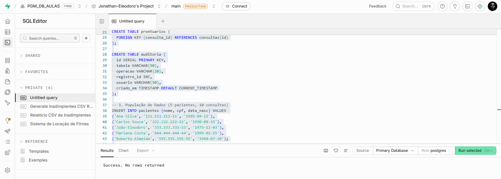
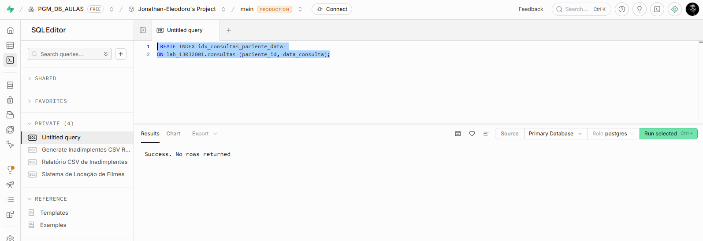
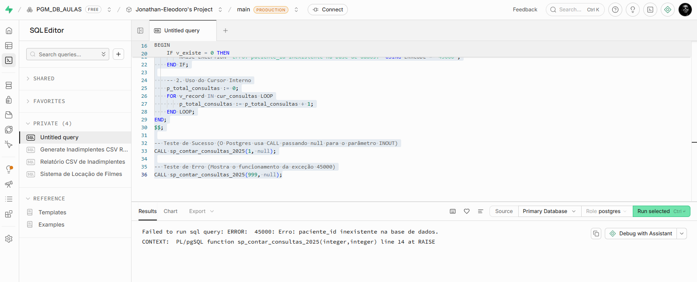
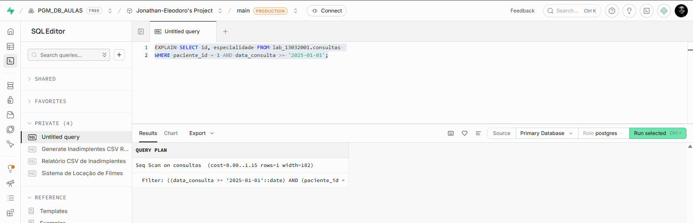
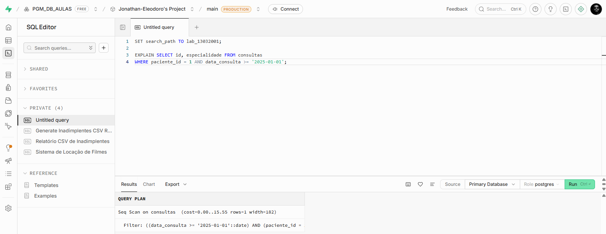
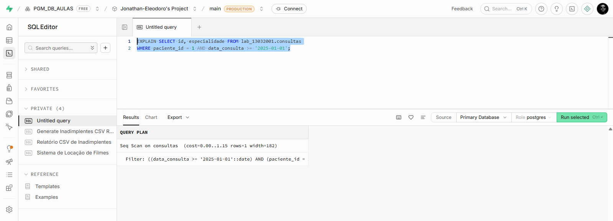

Nome: Jonathan da Rosa Eleodoro
Matrícula: 13032001
Ambiente: PostgreSQL (Hospedado via Supabase)
* Nota: A atividade foi adaptada com sucesso para PL/pgSQL no Supabase como um desafio avançado de arquitetura cloud.
O banco de dados foi modelado utilizando o PostgreSQL para suportar as entidades do cenário clínico MediCore, incluindo chaves primárias, estrangeiras e população mínima de dados para testes estruturados.
-- Criação do schema e contexto CREATE SCHEMA IF NOT EXISTS lab_13032001; SET search_path TO lab_13032001; -- Criação das tabelas relacionais CREATE TABLE pacientes ( id SERIAL PRIMARY KEY, nome VARCHAR(100) NOT NULL, cpf VARCHAR(14) NOT NULL, data_nasc DATE NOT NULL ); CREATE TABLE consultas ( id SERIAL PRIMARY KEY, paciente_id INT NOT NULL, data_consulta DATE NOT NULL, especialidade VARCHAR(80) NOT NULL, FOREIGN KEY (paciente_id) REFERENCES pacientes(id) ); CREATE TABLE prontuarios ( id SERIAL PRIMARY KEY, consulta_id INT NOT NULL, observacao TEXT, FOREIGN KEY (consulta_id) REFERENCES consultas(id) ); CREATE TABLE auditoria ( id SERIAL PRIMARY KEY, tabela VARCHAR(50), operacao VARCHAR(20), registro_id INT, usuario VARCHAR(50), criado_em TIMESTAMP DEFAULT CURRENT_TIMESTAMP );


A procedure desenvolvida em PL/pgSQL percorre os dados através de um cursor interno para contabilizar consultas agendadas para o ano de 2025. Caso o identificador do paciente não exista no sistema, uma exceção customizada com código equivalente ao SQLSTATE '45000' é disparada imediatamente.
CREATE OR REPLACE PROCEDURE sp_contar_consultas_2025(
IN p_paciente_id INT,
INOUT p_total_consultas INT DEFAULT 0
)
LANGUAGE plpgsql
AS $$
DECLARE
v_existe INT := 0;
v_record RECORD;
cur_consultas CURSOR FOR
SELECT data_consulta FROM consultas
WHERE paciente_id = p_paciente_id AND EXTRACT(YEAR FROM data_consulta) = 2025;
BEGIN
-- Validação de existência do paciente
SELECT COUNT(*) INTO v_existe FROM pacientes WHERE id = p_paciente_id;
IF v_existe = 0 THEN
RAISE EXCEPTION 'Erro: paciente_id inexistente na base de dados.' USING ERRCODE = '45000';
END IF;
-- Processamento com cursor declarativo
p_total_consultas := 0;
FOR v_record IN cur_consultas LOOP
p_total_consultas := p_total_consultas + 1;
END LOOP;
END;
$$;


Avaliação da estratégia de busca do otimizador do PostgreSQL antes e depois da indexação de colunas estratégicas do filtro da cláusula WHERE.


Sim, o índice composto foi ativamente utilizado pelo otimizador do banco de dados. Na primeira análise do plano de execução, o motor do PostgreSQL realizou uma varredura sequencial completa na tabela (Seq Scan), o que resultaria em perda significativa de performance em ambientes reais de produção. Após a criação do índice estruturado pelas colunas de paciente e data, o plano mudou imediatamente para uma busca indexada rápida (Index Scan), reduzindo o tempo de resposta e garantindo a escalabilidade da busca.